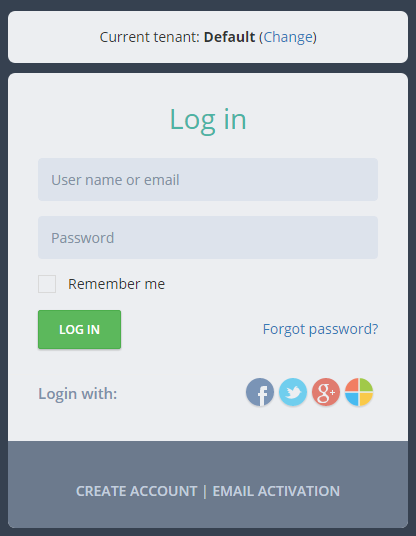
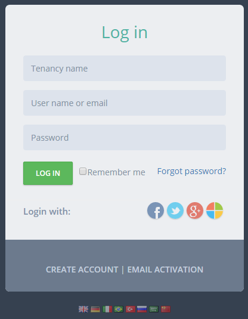
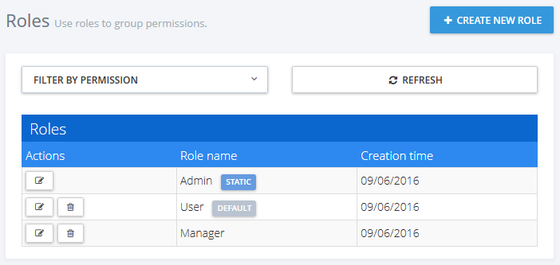
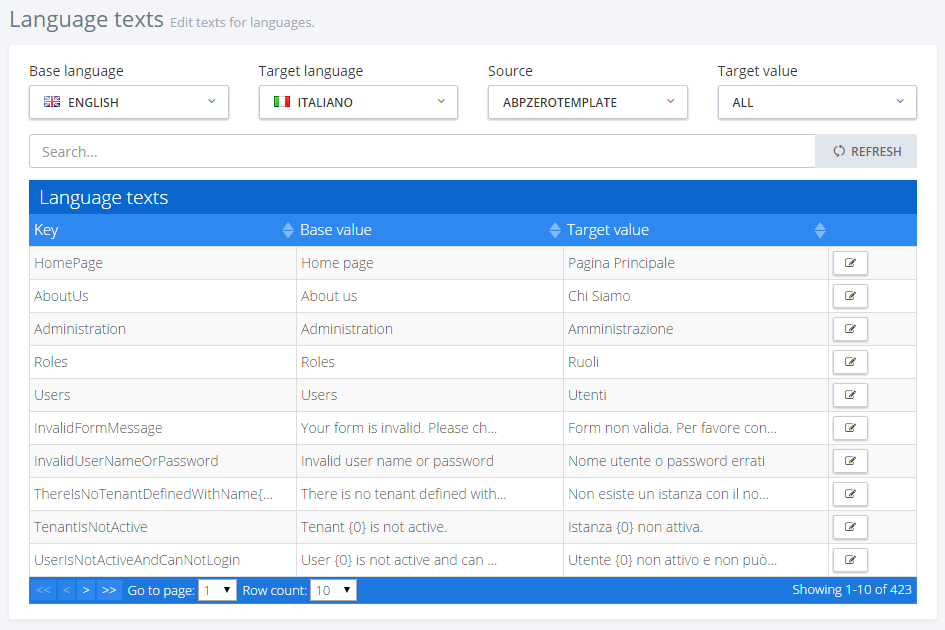
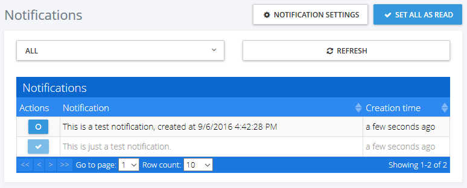

In Getting Started document, a new sample project is created named "Acme.PhoneBook". This document is a complete guide while developing your project. We definitely suggest to read this document before starting to the development. Since ASP.NET Zero is built on ASP.NET Boilerplate application framework, this document highly refers it's documentation.
Before reading this document, it's suggested to run the application and explore the user interface. This will help you to have a better understanding of concepts defined here.
Following tools are needed in order to use ASP.NET Zero Core solution:
After you create and download your project, you have a solution structure as shown below:
There are 8 projects in the solution:
ASP.NET Zero solution contains three applications:
Multi-tenancy is used to build SaaS (Software as a Service) applications easily. Wtih this technique, we can deploy single application to serve to multiple customers. Each Tenant will have it's own roles, users and settings.
ASP.NET Zero's all code-base is developed to be multi-tenant. But, it can be disabled with a single line of configuration if you are developing a single-tenant application. When you disable it, all multi-tenancy stuff will be hidden and not available. If multi-tenancy is disabled, there will be a single tenant named Default.
There are two types of perspective in multi-tenant applications:
ASP.NET Zero uses ABP's (ASP.NET Boilerplate) data filters. So, it automatically filters tenant datas if you properly use filter interfaces. Read multi tenant documentation if you are building multi-tenant applications.
appsettings.json file contains a setting, named "WebSiteRootAddress", which stores root URL of the web application:
"WebSiteRootAddress": "http://localhost:62114/"
It's used to calculate some URLs in the application. So, you need to change this on deployment. For multi-tenant applications, this URL can contain dynamic tenancy name. In that case, put {TENANCY_NAME} instead of tenancy name like:
"WebSiteRootAddress": "http://{TENANCY_NAME}.mydomain.com/"
Thus, AspNet Zero can automatically detect current tenant from URLs. If you configure it as above, you should also redirect all subdomains to your application. To do that;
There may be other ways of doing it but this is the simplest.
ASP.NET Zero contains front-end pages that can be a starting point for your public web site or a landing page for the application. When you first run the project, you will see the Home Page as shown below:

There are two pages here: Home Page and About. Contents of these pages are just placeholders and for demo purposes. You can completely remove content and build your page upon your needs. Also, you should change the logo with your Company's logo.
See metronic front-end theme for all possibilities and components to build a richer web site.
Menus are defined in FrontEndNavigationProvider class. When you add a new menu item here, it will be automatically shown in the menu. There is a Login link at the top right corner. This link takes us to the Login page to enter to the backend application.
Layout of front-end pages are located under Views/Layout folder of the .Web project:

_Layout is the main layout file that includes scripts and styles. Language flags and the menu is rendered in Header component which is located under Shared/Components. _PreFooter is not used but you can add it to the _Layout if you want.
When you click the "New tenant" link in the front end application, you can sign up to become a new tenant:

Here, you can create a new tenant. TenantRegistrationController is used to register a new tenant. Tenant registration can be enabled/disabled and some settings can be changed in the settings page of the backend application.
AccountController provides login, register, forgot password and email activation pages.
Account management pages have a seperated _Layout view under Views/Account folder:

Related Script and Style resources located under view-resources/Views/Account folder:

As similar, all views of the application have corresponding style and script files under wwwroot/view-resources folder.
Main view for AccountController is the Login page:

The tenant selection section above login section is shown only in a multi-tenant application and if "subdomain tenancy name detection" is not possible (See host settings section). When we click Change link, tenant change dialog appears and we can change the tenant. There is a single tenant named Default in the initial database (See Entity framework section for initial seed data). Leave tenancy name input as blank to login as host.
We can use admin user name and 123qwe password in first run the application. At first login, we should change admin password since 123qwe is not very secure:

After changing password we are redirected to the backend application.
ASP.NET Zero supports social media logins. To enable it, we should change the following settings in appsettings.json file.
"Authentication": {
"Facebook": {
"IsEnabled": "false",
"AppId": "",
"AppSecret": ""
},
"Google": {
"IsEnabled": "false",
"ClientId": "",
"ClientSecret": ""
},
"Twitter": {
"IsEnabled": "false",
"ConsumerKey": "",
"ConsumerSecret": ""
},
"Microsoft": {
"IsEnabled": "false",
"ConsumerKey": "",
"ConsumerSecret": ""
}
},
You can find many documents on the web to learn how to obtain authentication keys for social platforms. So, we will not go to details of creating apps on social medias. Once you get your keys, you can write them into appsettings.json. When you enable it, social media logos are automatically shown on the login page as shown below:

In addition to social logins, ASP.NET Zero includes OpenId Connect Login integrated. It's configuration can be changed in appsettings.json:
"OpenId": {
"IsEnabled": "false",
"Authority": "",
"ClientId": "",
"ClientSecret": ""
}
A logo (similar to social logos above) is shown in Login page when it's enabled.
ASP.NET Zero is ready to provide two factor login, but it's disabled as default. You can easily enable it in host settings page (in Security tab):

Note: In a multi-tenant application, two factor authentication is available to tenants only if it's enabled in the host settings. Also, email verification and SMS verification settings are only available in the host side. This is by design.
When it's enabled, user is asked to select a verification provider after entering user name and password:

Then a confirmation code is sent to the selected provider and user enters the code in the next page:

This is available if user has a confirmed email address. Since email sending is disabled in debug mode, you can see the code in logs. In release mode, email will be sent (You can change this and make emailing available in also debug. See sending emails section).
This is available if user has a confirmed phone number. SMS sending is not implemented actually (because it requires an integration to an SMS vendor). Current implementation just writes security code to logs. You should complete IdentitySmsMessageService class in the solution to make it usable. Otherwise, disable SMS verification in the settings.
As seen in the previous section, you can configure user lockout settings. Users are lockout when they enter wrong password for a specified count and duration.
When we click the "Create Account" link in the login page, a registration form is shown:

A user can be register for a tenant, not for host if this is a multi-tenant application. If it's single-teant, there will be no tenancy name input here.
Recaptcha (security question) is optional. It uses Google's recaptcha service. Recaptcha service works per domain. So, to make it properly work, you should create your own private and public keys for your domain on https://www.google.com/recaptcha and replace keys in appsettings.json file.
When a user registers as shown above, an email confirmation code is sent to his email address. If user did not receive this email for some reason, he can click Email activation and re-send the confirmation code.

Again, Tenancy name input is not shown for a single-tenant application or tenant name is known via subdomain (like tenancyname.mydomain.com).
If a user forgots his password, he can click the "Forgot Password" link to get an email to reset the password.

This is the actual application which is entered by username and password. You will mostly work on this application to add your business requirements.
Backend application is built in a dedicated area, named "App" by default, but can be determined while you are creating the solution. So, all controllers, views and models are located under Areas/App folder. Also, related script and style files are located under wwwroot/view-resources/Areas/App folder, as shown below:

Application's main menu is defined in AppNavigationProvider class. See ABP's navigation documentation to have a deep understanding on creating menus. When you add a new menu item, it's automatically rendered in the layout.
Layout of the application is located under Areas/App/Views/Layout folder. It uses Components for header, footer and sidebar:

Main menu is rendered in sidebar component. Layout also highly uses bundling & minification (see the section below) system for script and style includes.
If you're not developing a multi-tenant application, you can skip this section.
Most SaaS (multi-tenant) applications have editions (packages) those have different features. Thus, they can provide different price and feature options to thier tenants (customers). Editions page (available in host login) is used to manage application's editions:

Editions are used to group feature values and assign to tenants. When we click Actions/Edit for an edition, we can see it's assigned features:

Startup project only contains Chat feature (and it's 2 sub-features) that can be enabled/disabled per edition/tenant. All features are defined in AppFeatureProvider class. Feature values are stored in AbpFeatures table. Features are not restricted to boolean (enabled/disabled) values and can contain different type of values as shown below:

See feature management and edition management documents for more information.
If you're not developing a multi-tenant application, you can skip this section.
If this is a multi-tenant application and you logged in as a host user, then tenants page is shown:

A tenant is represented by Tenant class. Tenant class can be extended by adding new properties. There is an only one tenant, named Default as initial. Tenancy Name (code name) is the unique name of a tenant. A tenant can be active or passive. If it's passive, no user of this tenant can login to the application.
When we click the "Create New Tenant" button, a dialog is shown:

Tenancy name should be unique and not contain spaces or other special chars since it may be used as subdomain name (like tenancyname.mydomain.com. See the section below). Name can be anything. Admin email is used as email address of the admin user of new tenant. Admin user is automatically created with the tenant. We can set a random password for admin and send activation email. When user first logins, he/she should change the password. We can uncheck this to enter a known password.
When we create a new tenant, we should select/create a database to store new tenant's data. We can select 'Use host database' to store tenant data in host database (can be used for single database approach) or we can specify a connection string to create/use a dedicated database for new tenant. AspNet Zero supports hybrid approach. That means you can use host database for some tenants and create dedicated databases for some other tenants. Even you can group some tenants in a separated database.
All tenant actions are handled by TenantAppService class. Example (deleting a tenant):
[AbpAuthorize(AppPermissions.Pages_Tenants_Delete)]
public async Task DeleteTenant(EntityRequestInput input)
{
var tenant = await TenantManager.GetByIdAsync(input.Id);
CheckErrors(await TenantManager.DeleteAsync(tenant));
}
TenantAppService mostly uses TenantManager domain service for tenant operations..
An edition can be assigned to a tenant (while creating or editing). Tenant will inherit all features of the assigned edition. But we can also override features and values for a tenant. Click actions/change features for a tenant to customize it's features:

As a host user, we may want to perform operations in behalf of a tenant. In this case, we can click the "Login as this tenant" button in the actions. When we click it, we see a modal to select a user of the tenant. We can select any user and perform operations allowed that user. See User Impersonation section in this document for more information.
A multi-tenant application generally uses subdomain to identify current tenant. tenant1.mydomain.com, tenant2.mydomain.com and so on. ASP.NET Zero automatically identify and get tenant name from subdomain (See host settings section).
Organization units (OU) are used to hierarchically group user and entities. Then you can get user or entities based on their OUs. When we click Administration/Organization units, we enter the related page:

Here, we can manage OUs (create, edit, delele, move) and members (add/remove).
OrganizationUnitManager is used to manage OUs, UserManager is used to manage OU members in the code. OrganizationUnitAppService performs the application logic.
In the left OU tree, we can right click to an OU (or left click to arrow at the right) to open context menu for OU operations. When we try to add a member, a modal is shown to select the user:

This is actually a generic lookup modal and can be used to select any type of entity (see Areas/App/Views/Common/Modals/_LookupModal.cshtml and it's related script file). To select the users, we created FindUsers method in CommonLookupAppService then configured the modal to work with this method (see view-resources/Areas/App/Views/OrganizationUnits/index.js file for usage of lookupModal.open).
See organization unit management document for more information.
When we click Administration/Roles menu, we enter to the role management page:

Roles are used to group permissions. When a user has a role, then he/she will have all permissions of that role.
A role is represented by the Role class. Role class can be extended by adding new properties.
RoleManager performs domain logic, RoleAppService performs application logic for roles.
Roles can be dynamic or static:
One or more roles can be set as default. Default roles are assigned to new added/registered users as default. This is not a development time property and can be set or changed after deployment.
In startup project, we have static admin role for host (for multi-tenant apps). Also, we have static admin and user roles for tenants. Admin roles have all permissions granted by default. User role is the default role for new users and has no permission by default. These can be changed easily. See StaticRoleNames class for all static roles and AppRoleConfig for changing static roles.
Since roles are used to group permissions, we can set permissions of a role while creating or editing as shown below:

(not all permissions shown in the figure above)
Every tenant has it's own roles and any change in roles for a tenant does not effect other tenants. Also, host has also own isolated roles.
When we click Administration/Users menu, we enter to the user management page:

Users are people who can login to the application and perform some operations based on their permissions.
User class represents a user. User class can be extended by adding new properties.
UserManager is used to perform domain logic, UserAppService is used to perform application logic for users.
A user can have zero or more roles. If a user has more than one role, he inherits union of permissions of all these roles. Also, we can set user-specific permission. A user specific permission setting overrides role settings for this permission. A screenshot of user permission dialog:

(not all permissions shown in the figure above)
A dialog is used to create/edit a user:

We can change user's password, make her active/passive and so on... A user can have a profile picture. It can be changed by the user (See User Menu section). Admin user can not be deleted as a business rule. If you don't want to use admin, you can make it passive.
As admin (or any allowed user), we may want to login as a user and perform operations in behalf of that user, without knowing his password. When we click "Login as this user" icon in the actions of a user, we are automatically redirected and logged in as this user. This is called as "user impersonation". When we impersonate a user, a "back to my account" option is added to the user profile menu:

In an impersonated account, we can only perform operations allowed to that user. That means, everything exactly works as same as this user logged in himself. The only difference is shown in audit logs which indicates that operations are performed by somebody else. Notice that; Also a red 'back' icon shown near to the user name to indicate that you are in an impersonated account.
Impersonation is done in AccountController of the Web project.
Language management page is used to manage (add/edit/delete) application languages and change localized texts:

We can create new language, edit/delete an existing language and set a language as default. Note that; tenants can not edit/delete default languages, but host users can do.
When we click to Change text for any language, we are redirected to a new view to edit language texts:

We can select any language as a base (reference) and change target language's texts. Base language is just to help the translation progress. Since there maybe different localization sources, we select the source to translate. When we click the edit icon, we can see the edit modal for the selected text:

Host users (if allowed) can edit languages and localized texts. These languages will be default for all tenants for a multi-tenant application. Tenants inherit languages and localized texts and can override localized texts or can add new languages.
Both pages use LanguageAppService class as application service. It has methods to manage languages and localized texts. IApplicationLanguageManager and IApplicationLanguageTextManager interfaces are used to perform domain logic (as used by LanguageAppService).
See language management and localization documents for more information.
In audit logs page, we can see all user interactions with the application:

All application service methods and MVC controller actions are automatically logged and can be viewed here. See audit logs documentation to learn how to configure it. When we click the magnifier icon, we can see all details an audit log:

Audit log report is provided by AuditLogAppService class.
Host settings page is used to configure some system settings:

Timezone is an important setting in this page. AspNet Zero can work in multiple zones. Each user can see dates and times in their own time zone. Timezone setting in this page allows you to set default time zone for the application including all tenants and users. Tenants and users can change time zone in their own settings. Timezone setting is available only if you are using UTC clock. See documentation to switch to UTC.
SAVE ALL button saves all settings in one click. HostSettingAppService is used to retrieve and save settings (See setting provider section for more information).
Security tab in host settings page contains password complexity settings. Host can define system wide password complexity settings in this tab. Each tenant can override this setting in tenant settings page. PasswordComplexityChecker class is responsible for checking if a password satisfies the password complexity settings.

In a multi-tenant application, tenant settings are shown as below:

If we disable multi-tenancy, some host settings are also shown in this page (since there is no host setting page). Tenants can also define password complexity settings for their users or they can use password complexity settings defined by host user.
TenantSettingAppService is used to get/set tenant settings.
LDAP (Active Directory) Authentication is disabled by default. To make it work, we should disable multi-tenancy since LDAP auth is not used in a multi-tenant system normally. In CoreModule class in .Core project, we should enable the following line:
Configuration.Modules.ZeroLdap().Enable(typeof(AppLdapAuthenticationSource));
Then, we can see LDAP settings section in settings page:

We can check "Enable LDAP Authentication" to enable it. If the server works in domain and application runs with a domain user or local system, then generally even no need to set Domain name, user and password. You can logout and then login with your domain user name and password. If not, you should set these credentials.
Maintenance page is available to host side for multi tenant applications (for single tenant applications it's shown in tenant side) and shown as below:

In the Caches tab, we can clear some or all caches. Clearing caches may be needed if you manually change database and want to refresh application cache. CachingAppService is used to clear caches in the server side.
Website Logs tab is used to see and download logs:

WebLogAppService is used to get logs from server.
ASP.NET Zero startup project also includes a sample dashboard. It's just for demo purposes, you can make it as a start point for your actual dashboard:

Here, only Member Activity graph data is retrieved from server (from TenantDashboardAppService). You can click the refresh button to generate random graphs.
Notification icon is located next to the language selection button. The number in the red circle shows unread notification count.

User can see 3 recent notifications by clicking this icon.

User can marks all notifications as read by clicking the "Set all as read" link or can mark a single notification by clicking the "set as read" link next to each notification.
Notifications are sent real-time using SignalR. In addition, a desktop push notification is shown when a notification is received.
"Settings" link opens notification settings dialog.

In this dialog there is a global setting for user to enable/disable receiving notifications. If this setting is enabled, then user can enable/disable each notification individually.
You can also define your custom notifications in AppNotificationProvider class. For example, new user registration notification is defined in the AppNotificationProvider as below.
context.Manager.Add(
new NotificationDefinition(
AppNotificationNames.NewUserRegistered,
displayName: L("NewUserRegisteredNotificationDefinition"),
permissionDependency: new SimplePermissionDependency(AppPermissions.Pages_Administration_Users)
)
);
See notification definitions section for detailed information.
AppNotifier class is used to publish notifications. NotificationAppService class is used to manage application logic for notifications. See notifications documentation for detailed information.
All notifications of user are listed in this page.

Chat icon is located next to user's profile image on top right corner of the page. The number in the red circle shows total unread chat message count.

When user clicks this icon, chat panel appears on the right of page. This panel contains friends of user and list of blocked users.

User can add new friends by writing the username into username textbox above friend list. If "Chat with other tenants" feature is enabled for tenant, users of other tenants can be added as a friend by writing [tenancy name]\[user name] (ex: Default\admin). If "Chat with host users" feature is enabled, host users can be added as friend by writing .\[user name] in the same textbox.
While online friends/users have a green circle on their profile image, offline friends/users have a gray circle.
User can pin or unpin the chat panel by clicking the pin icon on top right corner of the chat panel. Application tries to remember last state of chat panel and restores it when user login to application.
When a friend/user is selected, conversation panel is opened.

User can block or unblock friend/user in this area. There is a wrench icon right of the selected user's username. This icon opens an action menu and this menu contains block user or unblock user actions according to user's block status.
Chat messages are distrubited over ChatHub signalR hub class which uses ChatMessageManager domain class.
ChatUserStateWatcher class is responsible for watching online/offline state changes of chat users. When a user becomes online or offline, this class catches the state change and notifies friends of related user.
FriendshipAppService and FriendshipManager classes are responsible for managing friendship requests. Chat messages from blocked users are not delivered to target users.
Since chat is a real time operation, application caches friends of online users and unread message count from each friend. UserFriendsCache class manages these caching operations.
UserFriendCacheSyncronizer class is responsible for keeping user friends cache up to date. In order to do that, it watches some events of Friendship and ChatMessage entities.

There are three chat features in the system. These are "Chat", "Chat with host", "Chat with other tenants". These features can be enabled/disabled per edition/tenant. By using these features host can enable/disable chat with other tenant's users or host users.
A user can click his name at top right corner to open user menu:

Linked accounts are used to link multiple accounts to each other. In this way, a user can easily navigate through his/her accounts using this feature.
User can link new accounts or delete already linked accounts by clicking the "Manage accounts" link.

In order to link a new account, user must enter login credentials of related account.

UserLinkAppService class is used to manage application logic for account linking, UserLinkManager class is used to manage domain logic for account linking.
My settings is used to change user profile settings:

As shown here, admin user name can not be changed. It's considered a special user name since it's used in database migration seed. Other users can change their usernames. ProfileAppService is used to get/change settings.
All login attempts (success of failed) are logged in the application. A user can see last login attempts for his/her account. UserLoginAppService is used to get login attempts from server.

A user can change own profile picture. ProfileController is used to upload and get user profile pictures. Currently, jpg/jpeg, gif and png files are supported, you can extend it.
ProfileAppService is used to change password.
AccountController is used to logout the user and redirect to Login page.
AspNet Zero solution contains an extra project, Web.Host, which just exposes all application functionality as remote API. Thus, you can consume your application as API from any device. Actually, Web.Mvc project also does it, provides API for all application functionality. The difference is that Web.Mvc project has also MVC Controllers, Views, scripts and so on. If you just want to deploy API without UI, you can use Web.Host project. Otherwise, you can even delete it. We are using Web.Host project to provide server side API to Angular SPA.
A few notes on Web.Host project:
AspNet Zero includes a tool, Migrator.exe, to easily migrate your databases. You can run this application to create/migrate host and tenant databases.

This application gets host connection string from it's own appsettings.json file. It will be same as in the appsettings.json in .Web project at the beggining. Be sure that the connection string in config file is the database you want. After getting host connection sring, it first creates the host database or apply migrations if it does already exists. Then it gets connection strings of tenant databases and runs migrations for those databases. It skips a tenant if it has not a dedicated database or it's database is already migrated for another tenant (for shared databases between multiple tenants).
You can use this tool on development or on product environment to migrate databases on deployment, instead of EntityFramework's own Migrate.exe (which requires some configuration and can only work for single database in one run).
ASP.NET Core is initialized from the Startup class in the application. We configure all libraries (including ABP) in this class. We suggest you to start by checking this class. It is also integrated to OWIN. So, you can add OWIN middlewares here.
ASP.NET Zero solution uses bower package manager to obtain front end library dependencies (like bootstrap and jquery). So, you can easily add new packages or update existing packages on Visual Studio or bower's command line interface. You can see all installed bower packages under Dependencies/Bower of the .Web project.

ASP.NET Zero project highly use AJAX to provide a better user experience. UI calls application service methods via AJAX. So, it's needed to create MVC API controllers as adapters (A Client calls MVC API Controller action via AJAX, then it calls application service method).
ABP framework automatically creates MVC API Controllers for all application services. So, no need to manually create MVC API Controller. We build dynamic web api controllers in PhoneBookWebModule class in .Web project. See related documentation for more.
While ABP dynamically create Web API Controllers, we can also create regular MVC API Controllers as we always do.
ASP.NET Zero User Interface is completely localized. AspNet Zero uses dynamic, database based, per-tenant localization (See the related section above).
XML files are used as base translation for desired languages:

PhoneBook will be your ProjectName. You can add more XML files by copying one XML file and translate to desired language. See valid culture codes.
When you are adding a new localizable text, add it to the XML file of the default language then use in your application (Also, add translated values to corresponding XML files). No need to add it to database migration code since value in the XML file will be used as default.
Application languages are defined in DefaultLanguagesCreator class. This is used as a seed data in Entity Framework Migration. So, if you want to add a new language, just add it into DefaultLanguagesCreator class. Also, you should add a corresponding XML file as described above as default translation.
See localization and language management documentations for more information.
ASP.NET Zero template uses EntityFramework 6.x code-first and migrations. PhoneBookDbContext (YourProjectDbContext for your project) defines the DbContext class. Migrations folder contains EF migrations.
PhoneBookRepositoryBase class is the base class for your custom repositories. See entity framework integration documentation for more.
Because of new xproj/project.json project structure of ASP.NET Core, Entity Framework's "Update-Database" and "Add-Migration" commands may not properly work. We used Migrator.EF6 tool to adapt Entity Framework 6.x to the new solution format. So, you can use Windows Command Promt to add migrations and update database.
First, open cmd in Windows and locate the folder contains .EntityFramework project file. Then,
ASP.NET Zero uses ABP's exception handling system. Thus, you don't need to handle & care about exceptions in most time.
ASP.NET Zero solution adds exception handling middlewares in the Startup class like that:
if (env.IsDevelopment())
{
app.UseDeveloperExceptionPage();
}
else
{
app.UseStatusCodePagesWithRedirects("~/Error?statusCode={0}");
app.UseExceptionHandler("/Error");
}
So, you get a nicely formatted exception page in development and a more user friendly error page in production. See ErrorController and it's related views (Views\Error) for details.
ASP.NET Core introduced user secrets system to store sensitive data in development. ASP.NET Zero uses this system (it's configured properly for your solution). You may want to use a different connection string (or social media API keys) in development and do not want to add these secret data in your appsettings.json in the project (and do not want to commit these sensitive information to your source control system). Then use secret manager tool to store this sensitive information in your local computer and allow your application to read them from your local computer if available.
For example, you can use the following command, in Windows command prompt in the location of Core project, to change connection string for your local development environment:
dotnet user-secrets set ConnectionStrings:Default "Server=1.2.3.4;Database=MyProjectDevDb;User=sa;Password=12345678"
This user secret value overrides the value in the appsettings.json. See ASP.NET's own documentation for details about user secrets.
Authorization system is based on permissions. AppPermissions contains constants for permission names and AppAuthorizationProvider class defines all permissions in the system. We should define a permission here before using it in application layer.
See authorization documentation to learn how to configure permissions.
AppFeatureProvider class defines features of the application for multi-tenant applications. Feature names are defined in AppFeatures class as contants.
See feature management documentation to learn how to define and use features.
Every setting has a unique name. Setting names are defined in AppSettings class as constants. All settings and their default values are defined in AppSettingProvider class.
See setting documentation to learn how to create and use settings.
Menus are automatically generated using definitions in AppNavigationProvider class. We have two menus: Main (the main menu in the backend application) and FrontEnd (Main menu in front-end web site).
See navigation documentation for more information.
ASP.NET Zero uses in-memory caching but it's ready to use Redis as cache server. If you want to enable it, just uncomment the following line in your WebModule (in App_Start folder in your .Web project):
Configuration.Caching.UseRedis();
Redis server should be running to be able to use it. See caching documentation for more information.
ABP framework contains a background job system with a default background job manager. If you want to use Hangfire as your background job manager, you can easily enable it.
First, uncomment these lines in WebModule (in App_Start folder in your .Web project):
Configuration.BackgroundJobs.UseHangfire(configuration =>
{
configuration.GlobalConfiguration.UseSqlServerStorage(Configuration.DefaultNameOrConnectionString);
});
If you want to enable Hangfire dashboard, you can uncomment the following line in Startup.cs (in App_Start folder in your .Web project):
app.UseHangfireDashboard(...);
Note: Hangfire creates it's own tables in the database. See background job and hangfire intergation documents for more information.
SignalR is properly configured and integrated to the startup template. Real time notification and chat systems use it. You can direcly use SignalR in your applications.
Notice that; As the time being, SignalR has not been released for ASP.NET Core yet. We integrated OWIN to ASP.NET Core pipeline in order to use SignalR in the application.
See SignalR integration document for more information.
ASP.NET Zero uses Log4Net for logging as default. Configuration is defined in log4net.config file in the .Web project. It writes all logs to App_Data/Logs/Logs.txt folder of web site as default. When you publish your project, remember to configure write permission to Logs folder.
Check logging documentation to see how to inject ILogger and write logs.
ASP.NET Zero uses AutoMapper for DTO to Entity mappings (and other types of object-to-object mappings). We use Abp.AutoMapper library that makes usage of AutoMapper simpler and declarative.
See the DTO class that is used to transfer a tenant editing information:
[AutoMap(typeof (Tenant))]
public class TenantEditDto : EntityDto
{
[Required]
[StringLength(Tenant.MaxTenancyNameLength)]
public string TenancyName { get; set; }
[Required]
[StringLength(Tenant.MaxNameLength)]
public string Name { get; set; }
public bool IsActive { get; set; }
}
Here, AutoMap attribute automatically creates mapping between TenantEditDto and Tenant classes. Then we can automatically convert a Tenant object to TenantEditDto (and vice verse) object as shown below:
[AbpAuthorize(AppPermissions.Pages_Tenants_Edit)]
public async Task<TenantEditDto> GetTenantForEdit(EntityRequestInput input)
{
return (await TenantManager.GetByIdAsync(input.Id)).MapTo<TenantEditDto>();
}
MapTo method does mapping.
Attribute based mapping may not be sufficient in some cases. If you need to directly use Automapper API to configure your mappings, you should do it in CustomDtoMapper class.
See Data Transfer Objects documentation for more information on DTOs.
ASP.NET Zero sends emails to users in some cases (like forgot password and email confirmation). Email template is defined in Emailing/EmailTemplates folder of .Core project (default.html). You can change default email template by editing this file.
Email sending is disabled in DEBUG mode. Because, development environment may not be configured properly to send emails. You can enable it if you want. It's enabled in RELEASE mode. Check YourProjectNameCoreModule class's PreInitialize method to change it if you like.
User profile pictures are stored in database, instead of file system. But it's not stored in Users table for performance reasons (Users are frequently retrieved from database, but profile pictures are rarely needed).
A general-purpose binary saving mechanism built in ASP.NET Zero. BinaryObject entity can be used to save any type of binary objects (byte arrays). Since a profile picture can be converted to a byte array, user profile pictures are saved here.
IBinaryObjectManager interface defines methods to save, get and delete binary objects. DbBinaryObjectManager implementes it to save binary object in database. For example, ProfileController uses IBinaryObjectManager to get current user's profile picture from database.
You can create a different implementation of IBinaryObjectManager interface to store files in another destination.
It's common to use the soft-delete pattern which is used to not delete an entity from database but only mark it as 'deleted'. So, if an entity is soft-deleted, it should not be accidently retrieved into the application. ABP's data filters make this automatically.
In ASP.NET Zero, most entities are soft-deleted. See ABP's data filter documentation for more information about this topic.
ASP.NET Zero uses Bundler & Minifier Visual Studio extension for bundling & minifying script and style files. It should be installed in your Visual Studio. bundleconfig.json file defines all bundling configuration.
ASP.NET Zero also uses Web Compiler Visual Studio extension for compiling LESS files to CSS files. This extension also should be installed in your Visual Studio. compilerconfig.json defines all compiling configuration.
See documentation of these extensions to learn to use them.
There are some useful base classes used in the application:
It's strongly recommended to inherit one of these classes upon your needs since they really make Logging, Localization, Authorization... easier.
ABP framework simplifies and automates CSRF protection as much as possible. AspNet Zero template comes with pre-configured and working out of the box. For more information please see ABP's XSRF-CSRF-Protection documentation
AppVersionHelper class is used to define current version of the application in single place. Version and release date automatically shown bottom left corner in the backend application pages. This helps us to see running application version always.
AspNet Zero uses cookie based authentication for browsers. However, if you want to consume MVC APIs or application services (those are exposed via MVC API) from a mobile or 3rd party application, you probably want a token based authentication mechanism. ASP.NET Zero includes a simple JWT bearer token authentication implementation.
Here, Postman (chrome extension) will be used to demonstrate requests and responses.
Just send a POST request to http://localhost:62114/jwt-token/authenticate with Context-Type="application/x-www-form-urlencoded" as shown below:

We sent a form values tenancyName, usernameOrEmailAddress and password. tenancyName is not used to authenticate as a host user. As seen above, result property of returning JSON contains the token and expire time (which is 24 hours by default and can be configured). We can save it and use for next requests.
After authenticate and get the token, we can use it to call any authorized actions. All application services are available to be used remotely. For example, we can use the User service to get a list of users:

Just made a POST request to http://localhost:6234/api/services/app/user/GetUsers with Content-Type="application/json" and Authorization="Bearer your-auth-token". Request body was just empty {}. Surely, request and response body will be different for different APIs.
Note that we also added X-Requested-With header to indicate that this is an AJAX request. Thus, ASP.NET Core can better handle the request and return appropriate return values on success and error cases.
Almost all operations available on UI also available as API and can be consumed easily as shown here.
Swagger UI is integrated to ASP.NET Zero but disabled by default. Swagger UI configuration is located in Startup class in the .Web project. You can enable it by just uncommenting the related lines:
In Startup.ConfigureServices method, enable the following line:
services.AddSwaggerGen();
And in Startup.Configure method, enable the following lines:
app.UseSwagger();
app.UseSwaggerUi();
You can browse swagger ui with this URL: "/swagger/ui".

Thus, anyone (or any application) can explore, test and use the API easily.
ASP.NET Zero startup project contains unit and integration tests. Tests are developed using following tools:
Tests cover Domain (core) and Application layers of the project. Open Test Explorer (Test\Windows\Test Explorer in VS main menu) to run unit tests:

These unit tests will be a guide to understand the code. Also, they can be a model while writing your own unit tests for your application's functionalities.
All unit test classes (actually they are integration tests since they work integrated to ABP, EntityFramework, AutoMapper and other libraries used up to application layer) are derived from AppTestBase. It initializes ABP system, mocks database using Effort, creates initial test data and logins to the application for each tests. It also provides some useful common methods for all tests.
Here, a sample unit test in the application:
public class UserAppService_Delete_Tests : UserAppServiceTestBase
{
[Fact]
public async Task Should_Delete_User()
{
//Arrange
CreateTestUsers();
var user = await GetUserByUserNameOrNullAsync("artdent");
user.ShouldNotBe(null);
//Act
await UserAppService.DeleteUser(new IdInput<long>(user.Id));
//Assert
user = await GetUserByUserNameOrNullAsync("artdent");
user.IsDeleted.ShouldBe(true);
}
}
It creates some users to test and then verifies there is a user named "artdent". Then it calls DeleteUser method of the user application service (which is being tested). Finally, checks if user is deleted. Here, User is a Soft Delete entity, so it's IsDeleted property must be true if it's deleted.
You can read this article to understand unit testing better.
If you want to publish your solution to IIS, then check Microsoft's documentation.
Many open source frameworks and libraries are used to build ASP.NET Zero project. Here, a list of all libraries.